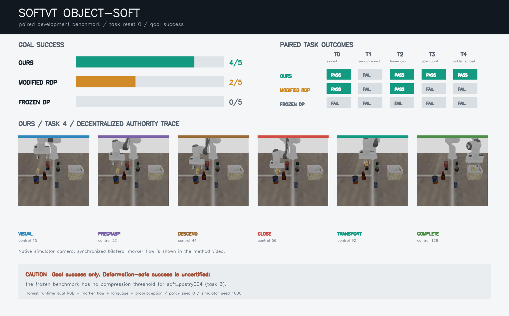

Dual RGB + language + proprioception
Frozen RDP trunk
Produces four slow visual action proposals. Its action is used only in the visual phase.
slow action proposalRetained as a hierarchy and control benchmark
The decentralized RDP hierarchy beats modified RDP and frozen DP on paired goal success. A causal follow-up shows that this advantage does not require online tactile messages on the current tasks.
The frozen hierarchy/controller treatment improves goal success over the registered RDP and DP comparators on this protocol.
The evidence does not show tactile necessity, tactile-ratio robustness, safe success, multi-seed robustness, or broad task generality.
01 / paired confirmation
Object-soft tasks 0-9, resets 5-9, simulator seed 2000, checkpoint seed 0. All methods used the same 50 reset states, horizon, scorer, initialization protocol, and honest runtime observations.
02 / causal follow-up
The preregistered follow-up reused the 50 confirmation cells. It intervened on sensor availability and tactile observer training while leaving the hierarchy and controller fixed.
Runtime touch-off exactly tied normal ours. The familywise one-sided 95% lower bound was -14 points; every Holm-adjusted one-sided paired p-value was 1.000.
| Arm | Goal success | Wilson 95% CI | Learned contact observed | Controller complete | Safety unknown |
|---|---|---|---|---|---|
| 100%-trained, normal touch | 29/50 · 58% | [44.2, 70.6] | 27/50 | 35/50 | 8/50 |
| 100%-trained, runtime touch off | 29/50 · 58% | [44.2, 70.6] | 0/50 | 37/50 | 9/50 |
| 12.5%-trained, normal touch | 30/50 · 60% | [46.2, 72.4] | 26/50 | 38/50 | 8/50 |
| 0%-data, untrained observer | 30/50 · 60% | [46.2, 72.4] | 0/50 | 36/50 | 9/50 |
Runtime-off records sensor_gate=[false,false] and disables tactile
messages at every inference. It is the direct no-sensing intervention.
RGB/proprioceptive preemption, task pose primitives, and a fixed 24-step maximum close-hold fallback can advance transport without tactile authorization.
Keep this as evidence for hierarchical control on object-soft tasks. Do not present its method gap as evidence that tactile sensing caused the gain.
03 / method
Observation representations are partly decentralized. Each tactile side exports a compact contact vote, while one central phase controller chooses the final 7D action.
Dual RGB + language + proprioception
Produces four slow visual action proposals. Its action is used only in the visual phase.
slow action proposalLeft marker-flow history
Private tactile representation; exports contact and persistence probabilities.
left compact voteRight marker-flow history
Independent weights and input history; never receives the left marker stream.
right compact voteRobot pose + task identity
Preempts vision near the grasp and supplies close and transport poses.
phase preemptionArchitecture boundary: this is role-specific observation with centralized arbitration. It is partial decentralization, not a multi-agent policy system.
04 / clean rollout evidence
Direct task-4, reset-0 streams from the performance renderer with TAA. Each file is displayed at or below its native resolution with no dashboard compositing, denoising, temporal filtering, or web re-encoding.
Evidence boundary: this is a clean rerender of the earlier development task-4 method cell, not one of the 50 confirmation cells. It visualizes the controller; the confirmation statistics remain the tables above.
These legacy dashboards enlarge native frames to make phase labels and three-arm comparisons readable. Use the direct streams above for visual inspection.
05 / cross-benchmark context
Restored historical camera evidence from a matched Wipe state. These clips use an earlier method revision and are not comparable with the SoftVT confirmation rates.
Evidence boundary: this is task visualization from an earlier matched development study. It is not footage from the current SoftVT method, not a TacEx confirmation cell, and not evidence for a current DP/RDP/ours ordering. TacEx records force-history vectors rather than tactile RGB, so there is no corresponding tactile image video in this artifact.
06 / development artifact
This frozen image reports the original development result: ours 4/5, RDP 2/5, DP 0/5. Its task-4 storyboard now uses the clean performance-renderer replay; the original noisy image remains available below.

07 / repository map
The former standalone atlas is preserved here as a dated repository snapshot. It maps the live, external, and retired benchmark lanes that existed on 2026-08-12.
Archived source
Browse adapter locations, basic evaluation commands, baseline context, and the original paper-lane recommendation without mixing those historical repository notes into the SoftVT or TacEx result claims above.
Snapshot boundary: this atlas is retained for provenance and may not match current main. Its cross-benchmark rows use different protocols and remain context only; they are not pooled with or directly ranked against the SoftVT and TacEx studies on this page.
08 / provenance
The downloadable manifest records revisions, hashes, protocols, and media sources.
| Perception regime | Honest runtime dual RGB, language, proprioception, and registered tactile treatment |
|---|---|
| Confirmation protocol | Tasks 0-9, resets 5-9, simulator seed 2000, checkpoint seed 0, 50 paired cells per arm |
| Ordering revisions | 7974b1c evaluation / 3799137 analysis |
| Necessity revisions | 1ed8789 evaluation / 0133165 analysis |
| SoftVTBench revision | 5805611 |
| TacEx rollout scope | Historical matched development visualization; onboard proprioception + force history; camera excluded from policy input |
| Safety | Not certified; 35/300 ordering cells and 34/200 ablation cells have unknown deformation safety |
| Generalization boundary | One checkpoint seed and one object-soft suite; no multi-seed or cross-suite claim |